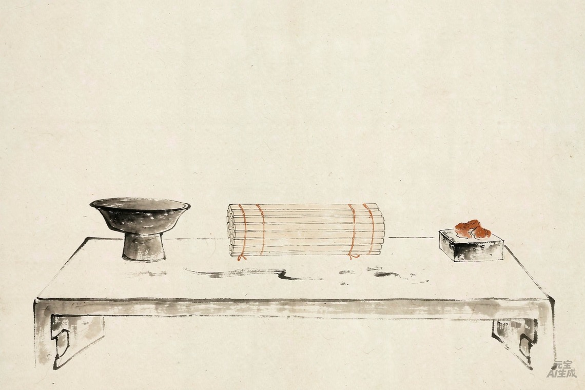
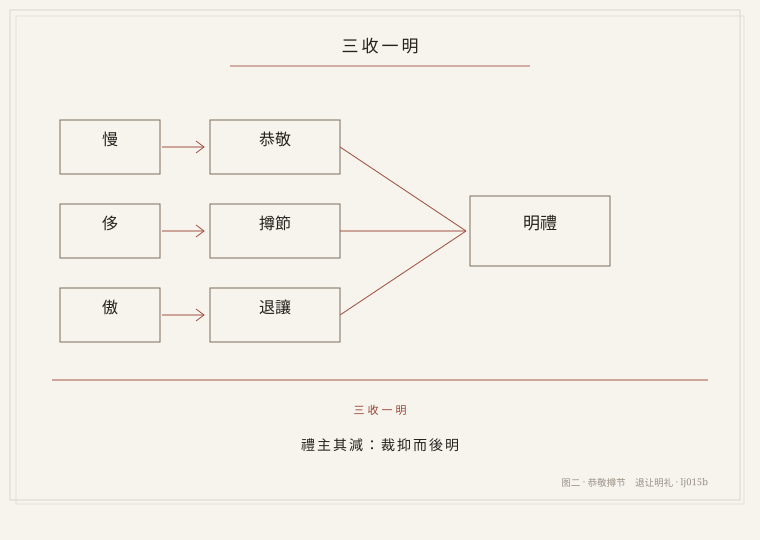

曲礼上 · 一·十六 · 第 15 课
七事既然都待礼，那么人该怎样持礼？这一节给三个动作：恭敬、撙节、退让。
说什么事：君子以恭敬、裁抑、退让，使礼显明。
落在哪一层：教。上一节讲礼之用，这一节讲师礼之态。
为何编在此位：一·十五说礼为七事之本，说得高；此节立刻落地，把「本」变成三个可以天天做的动作。
【经】是以君子恭敬撙節退讓以明禮。
是以 承上七事而言。所承者，正是「非礼不成」那一串。
君子 疏：「君子是有德有爵之通称。」王肃：「君上位，子下民。」郑注《少仪》：「君子，卿大夫若有异德者。」疏又云：「凡礼有深疑，则举君子以正之。」
恭敬 疏引何胤：「在貌为恭，在心为敬。」又辨：「貌多心少为恭，心多貌少为敬。」末云：「通而言之，则恭敬是一。」
撙节 郑注：「撙犹趋也。」疏：「撙者，趋也；节，法度也。言恒趋于法度。」陈澔别训：「撙，裁抑也，礼主其减。」
退让 疏：「应进而迁曰退，应受而推曰让。」进者自居其后，受者转推于人。
明礼 明不是知，是使礼显明。三个动作是礼的显影液。
所以君子用恭敬、裁抑、退让，使礼显明。
礼不自明，待人三动作而后明：恭敬治慢，撙节治侈，退让治傲。
第一层 三动作各治一病 熊氏分得极清：「恭敬以明礼之不容慢，撙节以明礼之不容侈，退让以明礼之不容傲。」慢、侈、傲，正是礼最常败的三处：慢在对上，侈在对己，傲在对人。三者不是三种美德，是三种对症之药。
第二层 恭与敬的分合 疏引何胤：「在貌为恭，在心为敬」；又辨「貌多心少为恭，心多貌少为敬」；末云「通而言之，则恭敬是一」。这一层极细：分，是说二者各有偏重；合，是说二者不可拆。只有貌，是恭而无敬；只有心，是敬而无恭——两者都明不了礼。
第三层 撙节：趋与减 郑注「撙犹趋也」，疏申之曰「撙者，趋也；节，法度也，言恒趋于法度」——此训是「向」，人一路向法度走。陈澔别训「裁抑」，又以「礼主其减」申之——此训是「收」，一路减其过。两训方向相反，而所指则一：趋法度者自然减其过，减其过者正是趋于法度。今日多以为礼是加——加话、加场面、加流程，与「主其减」正相反。
第四层 明是显影 三者不是礼的内容，是礼的显影液。礼在人心，本来无形；恭敬使其见于貌，撙节使其见于用，退让使其见于人我之间。三处一见，礼才叫明。
与今日何干 今日「有礼貌」多为加法：多说好话、多送东西、多绕弯子。此节给的是减法：先减慢、减侈、减傲。减完，礼自己就显出来。
| 左 | 右 |
|---|---|
| 恭敬：治慢 | 撙节：治侈 |
| 退让：治傲 | 明礼：使礼显影 |
| 貌多心少为恭 | 心多貌少为敬 |
| 礼主其减 | 减完，礼自显 |

